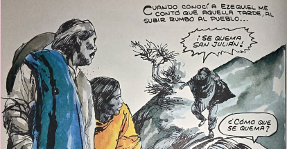

Para leer a liberales y conservadores
¿Desde cuándo hay conservadores?
Pável Granados
Sección: Aula Abierta

Quizás se han dado cuenta de lo resbaladizos que pueden llegar a ser los términos políticos: revolucionario y reaccionario, liberal y conservador, izquierdista y derechista… El presidente López Obrador puso de moda volver a esos términos del siglo XIX, y le divertía llamar “conservadores” a sus adversarios políticos, porque estamos acostumbrados a que la gente conservadora muy pocas veces se asume como tal. El caso de “izquierda” y “derecha” puede ser bastante más complicado, pues existen incluso quienes dicen que son términos inoperantes para la sociedad actual. Pero cada vez que se esgrime este argumento, hay quien dice: “Ésa es la típica postura de los derechistas: decir que no hay derecha”. Otro de los problemas para usar este tipo de palabras viene de la dificultad de ponerlos adecuadamente en sus épocas. ¿A partir de cuándo podemos usar estas palabras y cuándo dejan, efectivamente, de ser útiles? Generalmente, se dice que el siglo XIX fue el siglo del enfrentamiento entre liberales y conservadores. Tratemos de ver qué significaban estas palabras y cómo eran los personajes ue encarnaban los ideales respectivos. No es fácil, pues los liberales y los conservadores se odiaban a muerte, y sus ideas desencadenaron una de las guerras más sangrientas de nuestro país, la Guerra de Reforma, que dejó alrededor de 200 mil muertos. Curiosamente, aun cuando se trata del periodo más sangriento del siglo XIX, casi no hay investigaciones históricas que lo narren. Antes de que el historiador inglés Will Fowler escribiera su libro La Guerra de Tres Años (1857-1861) (Crítica, 2020), lo más reciente era un folleto de cuarenta páginas escrito en 1953 por Alfonso Trueba
El caso de “izquierda” y “derecha” puede
ser bastante más complicado,
pues
existen incluso quienes dicen que son
términos inoperantes para
la sociedad
actual
Pero ¿desde cuándo comenzaron a usarse estas palabras y qué significan? La historiadora
Anne Staples, en una conferencia en el Colegio del Estado de Hidalgo, dio una
explicación de ambos términos. Se comenzaron a usar a partir de la Guerra con los
Estados Unidos (1846-1848), como una reacción ante la pérdida de más de la mitad del
territorio mexicano. Tras la derrota de México, se dio una polémica entre los sectores
de la sociedad: entre los que opinaban que la causa era que no habíamos hecho honor a
nuestro gran pasado colonial (los conservadores) y los que pensaban que precisamente
habíamos perdido la guerra por no habernos liberado de ese pasado (los liberales).
Hay que pensar que la generación que había vivido la Independencia en 1821 y que tenía
anhelos de hacer algo grande con México, fue la misma que vio la derrota ante EU unos
años más tarde. ¿Cómo esa posible si apenas a finales del siglo XVIII la Nueva España
había sido la gran potencia de América, y ahora se desmembraba frente a los Estados
Unidos, que eran apenas trece colonias que ni siquiera estaban unidas entre sí?
Además, los primeros años de vida independiente Publicación del Bachillerato Nacional
29 habían consistido en tratar de lograr un gobierno estable. Pero eso no había sido
posible: prácticamente ningún presidente mexicano dejó el poder de manera pacífica.
Se dice que fue la era de los “chaquetazos”, porque los actores políticos cambiaban
de bando a la menor provocación. O sea: cambiaban de chaqueta, que eso significaba el
verbo “chaquetear”. En sólo veinticinco años de vida independiente hubo más de 1500
pronunciamientos litares, lo que significa que ésa era la manera de hacer política.
La primera lección de la derrota fue: la desunión social de México cobró la primera factura
Veamos lo que dice la doctora Anne Staples. “Conservador” se usaba como insulto de los
liberales federalistas hacia los liberales centralistas, pero el diario El Tiempo (de 1846)
lo comenzó a usar como propaganda de la monarquía luego de la guerra con los EU. El conservador
es aquel que quiere conservar las virtudes de la sociedad colonial. Lucas Alamán (1792-1853),
el principal ideólogo del conservadurismo en México, estaba de acuerdo con la Independencia,
incluso tuvo la pena de ver la bandera de Estados Unidos ondeando en el Palacio Nacional.
Es interesante regresar a esa época porque nos vuelve a plantear sus dudas. Alamán rechazaba
que las instituciones inspiradas en EU se impusieran en México, sobre todo si la manera de
ser del virreinato tenía más que ver con nosotros. Llegó a tener coincidencias con los
liberales; por ejemplo, pensaba que era necesaria una Economía Política, pero quería que
fuera implantada autoritariamente y no por medio de la democracia. De algún modo, admiraba
el mundo racional del siglo XVIII, un mundo administrado por un solo grupo. Nada de acomodos
políticos ni negociaciones, nada de grupos que se disputaran el poder. Alamán creía que
había ganado el egoísmo y la codicia. Lo que otros llamaban “progreso” era para él sinónimo
de materialismo e individualismo.
Ramón López Velarde, el maravilloso poeta de hace cien años, tenía esta división en su espíritu.
Le escribió a la patria, en un verso: “Sé igual y fiel”. Es decir, le dijo a México que no
cambiara, que fuera fiel a su pasado. ¿Cuál es nuestra posición ante esta idea? ¿Añoramos
cosas de México o buscamos superar el México que fue?
Sobre los liberales, Anne Staples dice:
Hubo una gama de personas con intereses en el mundo moderno, muchas de ellas,
herederas de la Ilustración, cuyas ideas pusieron en práctica después de la
Independencia. Conocer la naturaleza mediante su cuantificación, establecer
la ciencia de la estadística, querían saber cuántas personas y recursos tenía
México, qué idiomas hablaban, qué distancias había de un punto a otro, conocer
la altura de la Ciudad de México –cosa que hizo Humboldt–, recolectar muestras
geológicas… saber de qué se componía la República Mexicana en términos de su
geografía física y BACHILLER 30 humana, se convirtió en un interés que se ve
reflejado en las estadísticas estatales que se comenzaron a publicar entonces.
Eran los egresados del Colegio de Minería o del Colegio Militar, los médicos,
los arquitectos, los primeros empresarios: los que trabajaban por su cuenta y que
exaltaban el valor del individuo y su identidad personal. “El egoísmo como motivo
del desarrollo individual desempeña un papel importante; es una mentalidad ajena
o alejada de la antigua mentalidad de pertenecer en primer lugar al pueblo de Dios
como comunidad, como grey, como grupo, como familia.” Aparentemente, no los agrupaba
nada, pero su odio a los conservadores los unió como liberales, los que no tienen
otra guía que su conciencia. Pero en México siempre ha habido una gran necesidad de
pertenecer
Frente a estas dos ideas del mundo que causaron una guerra, ¿qué pensar? De la Guerra
de Reforma surgió el moderno México laico. Sería tal vez insultante para ambos bandos
pensar que, en el fondo, tenían aspectos similares. Los conservadores querían
prosperidad como los EU, pero sin renunciar a nada, su inspiración era el pasado.
Y la inspiración de los liberales era el futuro. Para unos, Dios escribía la Historia;
para otros, el destino lo escribía el hombre. Anne Staples concluye: “Se enfrentaron
sangrientamente sin comprenderse. Su singular y apasionada hostilidad mutua. Se empeñaron
en ser irreconciliables. El providencialismo católico frente al progresismo ilustrado.”
Guillermo Prieto (1818-1879) seguramente fue el mejor cronista de esa época.
Sus obras completas están reunidas en más de 30 volúmenes. Vivió para escribir,
y fue al mismo tiempo un político honesto que vivió siempre de manera modesta.
Póstumamente se publicaron sus Memorias de mis tiempos (1906), en que cuenta cómo
era México desde su infancia hasta 1853, es decir, en los peores tiempos de Antonio
López de Santa-Anna, y, curiosamente, año de la muerte de Lucas Alamán. Para conocer
ese siglo no hay mejor compañero que Prieto. Basta recorrer las páginas de sus libros
para saber cómo era México entonces, cómo era la capital, las pulquerías, las calles,
las canciones, la comida, pero también el mundo de la política. Basta con tomar un
pasaje de sus páginas para mirar el momento en que este cronista conoce al más
importante de los conservadores.
Eran los días en que el ejército invasor se acercaba a la Ciudad de México, el 20 de
agosto de 1847. La batalla de Padierna, por los rumbos de San Ángel, pudo haber sido
más favorable a México, de no ser por el poco apoyo que dio el general Santa-Anna a
las fuerzas de nuestro país. Días antes, mucha gente de la capital se vio en la necesidad
de abandonar sus casas: “El 9 de agosto, en medio de la agitación y de los toques de
alarma de la ciudad, mi familia dejó mi casa de México, y en carros con muebles dispuso
su traslación al rumbo de San Cosme. Mi señora muy enferma con tres niños, uno de ellos
recién nacido y el resto de la familia achacosa y llena de cuitas, buscaba en vano una
casa en qué guarecerse y no encontraba arrimo.”


Por suerte, de una casa rica salió un criado que les ofreció un departamento en la planta
baja del edificio. Cuando Prieto se encontró con su familia descubrió que era inquilino de
don Lucas Alamán. Nada menos que su enemigo, contra quien había publicado todo tipo de
insultos en la prensa. Se lo imaginaba tenebroso y sanguinario, pero en realidad en la casa
de su enemigo reinaba el silencio más profundo: “Criados respetuosos, con sus chalecos negros;
criadas ancianas de armador, delantal y chiquiadores… toques en la capilla para misa y
rosario; a medio día el ruido de la cadena del zaguán, mientras duraba la comida. Antes de las
diez de la noche todo dormía”.
Todas las tardes, el señor Alamán bajaba con su sombrero de paja, su bastón y su levita de
lienzo. ¿Cómo era este personaje? Dice Prieto que era: “de cuerpo regular, cabeza hermosa,
completamente cana, despejada frente, roma nariz, boca recogida, y como de labios forrados,
con dentadura blanquísima, fina, cutis fino, y rojo el color de las mejillas.” Prieto
contestaba secamente sus saludos y echaba a correr para no aceptar de don Lucas su
invitación para ir a dar la vuelta por el jardín. Una vez no hubo más remedio y tuvieron
que dar un paseo por el jardín de la casa:
Esa tarde hablamos de cosas indiferentes y de algunos oradores españoles. Al siguiente día nos
empeñamos en discusiones literarias, a los quince días buscaba yo al señor Alamán, por el encanto
de sus narraciones de viaje, su versación profunda en las literaturas latina y española, sus
tesoros de la historia anecdótica de la Francia y la España. Por supuesto que no había en estas
conversaciones la más leve alusión a la política
Creía entonces, como creo ahora al señor Alamán, un fanático cerrado en política, que creyó
inmadura la In dependencia, y como una insurrección de criminales el grito de Dolores, y estaba
persuadido de que eran una serie de delirios sacrílegos y pe ligrosos, los principios que proclamó
como dogmas la revolución francesa.
Y estas creencias eran tan obs tinadas en el señor Alamán, que aunque él, el primero,
denuncia en su historia abusos, y censura prác ticas funestas, encarece el sistema
colonial, cerrando los ojos a la ver dad y condenando como charla im pía la propaganda
de la libertad.
A Guillermo Prieto le tocó conocer de primera mano cómo eran los conservado res: todo
en su casa era virtud, regulari dad, decencia y orden. Desde temprano, don Lucas escribía
en su sala, con sus libros en la mano y de pie, en su es critorio elevado. No fumaba, así
que sus manuscritos eran impecables, sin mancha de cenizas. Además, Prie to, que lo vio
escribir, de cía que lo hacía siempre con una cachucha que le tapaba la cara. Sólo hasta
las doce la ma ñana salía de su estudio para ir a comer con su familia y con su es posa,
doña Narcisa. Un sacerdote al que llamaban Tata Padre bendecía la mesa y, al terminar de
comer, re zaba besando el pan. Luego, se dor mía la siesta y se dejaba para más tarde el
chocolate y el rezo del rosario. Esta familia visitó un tiempo Guillermo Prieto. La
recordaba con gratitud, porque don Lucas Alamán, es cribió, “respetó mis opiniones, no
obstante la acritud y sufi ciencia tonta con que a veces combatí las suyas”. Eric van Young.